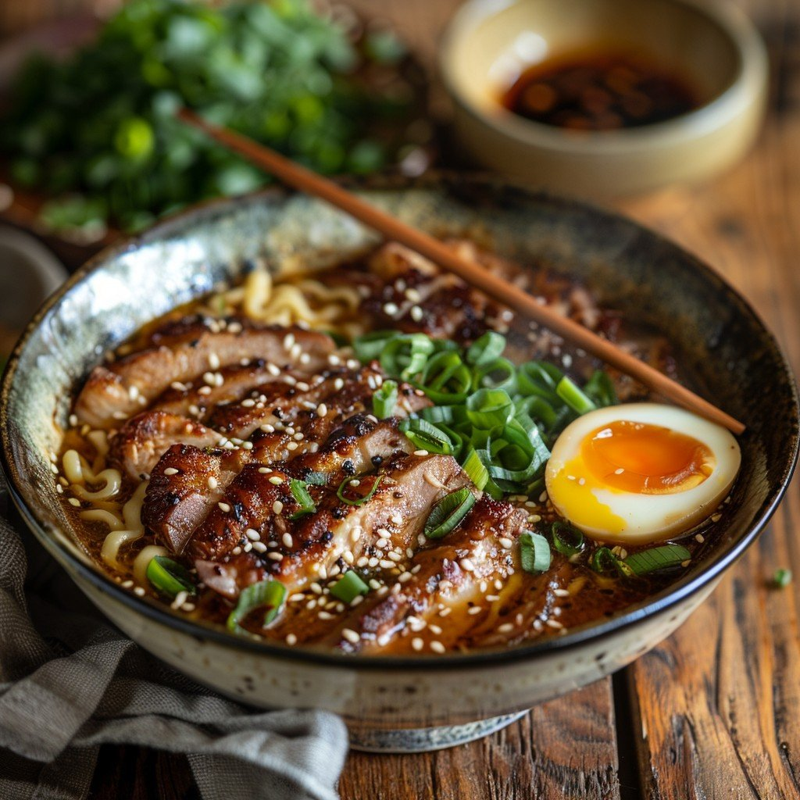

Ramen
Home

Ramen is one of Japan’s most beloved dishes, known for its rich flavor and
comforting warmth. It typically consists of wheat noodles served in a
flavorful broth made from meat or vegetables, topped with ingredients like
soft-boiled eggs, green onions, nori, corn, or mushrooms. Each region of
Japan has its own style of ramen — for example, Tokyo ramen is soy-sauce
based, while Hokkaido ramen uses a miso base for a deeper, heartier taste.
This flavorful and versatile dish can be customized with different broths,
noodles, and toppings to suit any taste. Whether enjoyed at a cozy ramen
shop or made at home, ramen remains a warm, satisfying meal that brings
comfort in every bowl.
Ingredients
- 200 g fresh or dried ramen noodles
- 4 cups chicken or vegetable broth
- 1 tablespoon soy sauce
- 1 tablespoon miso paste (optional, for extra flavor)
- 1 teaspoon sesame oil
- 1 clove garlic, minced
- 1 small piece of ginger, grated
- 1 boiled egg, halved
- 50 g sliced cooked meat (such as pork, chicken, or beef)
- 1 green onion, finely chopped
- A few pieces of nori (seaweed)
- 1/4 cup corn kernels (optional)
- Salt and pepper to taste
Instructions
-
Prepare the broth by simmering chicken, pork bones, or vegetables in
water for at least 30 minutes to extract flavor.
-
Add soy sauce, miso paste, sesame oil, garlic, and ginger to the broth,
then continue simmering for another 10 minutes.
-
Cook the ramen noodles in a separate pot according to the package
instructions, then drain and set aside.
-
Place the cooked noodles into serving bowls and pour the hot broth over
them.
-
Top with sliced meat, a boiled egg, green onions, corn, and nori or any
other toppings you like.
-
Finish with a drizzle of sesame oil or a dash of chili paste for extra
flavor.
- Serve immediately while hot and enjoy your homemade ramen!